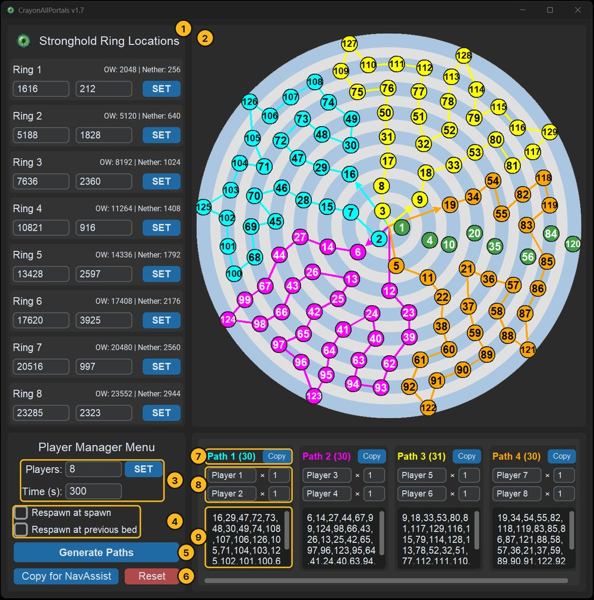

All / Software / CrayonAllPortals
CrayonAllPortals
Plans an All Portals route from one stronghold per ring and splits it evenly between players.

What it does
An All Portals run means lighting every End portal in the game. Enter one stronghold per ring and CrayonAllPortals predicts the rest of the ring, shows the ideal blind distance for each ring in the overworld and the nether, and works out the best route through all of them.
In co-op, players pair up on paths. The solver balances the paths so they all finish around the same time, and you can give faster players more work by raising their weight.
How to use it
- Download
CrayonAllPortals.exeand run it. There's nothing to install. - Enter the X and Z of one stronghold in each ring, or paste an F3+C command, then press Set. CrayonNavAssist helps you measure these.
- Set the number of players and how long the solver should search. More time gives better routes.
- Click Generate Paths. The map draws the best routes found so far while it works.
- Edit any path's stronghold list to change it. The map updates as you type.
- Click Copy for NavAssist and paste each player's path into their CrayonNavAssist.
What gets copied
The copied text lists each path as [id, x, z] lines, ready for CrayonNavAssist:
All Portals Paths
Path 1 - Player 1 & Player 2
[5,941,5033]
[12,118,8191]
[23,2565,10968]
Path 2 - Player 3 & Player 4
[2,-1246,1625]
[6,-3888,3331]
[13,-4719,6696]Everything you enter is saved automatically and comes back the next time you open the app.